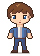
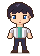
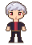
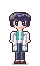
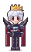

ลองแนว chibi เงาการ์ตูน
วาดตัวของเราเองตามลักษณะแนวจากรูปที่ส่งมา คือหัวโต พิกเซลใหญ่ เส้นน้ำตาลหนา เงาเป็นก้อนสีเรียบ ตาโตมีตาขาว ยืนกางขา กำมือ วางเทียบกับแนว MMO ที่เลือกไว้
พื้น
ขยาย
แนว chibi เงาการ์ตูน
กรอบ 40x56 · ร่างแรก



แนว MMO ที่เลือกไว้
รอบ 4 + หน้าไข่ · กรอบ 40x66



| chibi เงาการ์ตูน | MMO หน้าตรง | |
|---|---|---|
| ความรู้สึก | สดใส ชัด ตัวการ์ตูนเกม | เพรียว ละเอียดกว่า โตกว่า |
| ที่ 1× (หมาก) | ชัดกว่า หัวใหญ่ ตาเห็นชัด | เล็กกว่า ต้องพึ่งของบนหัว |
| วาดชิ้นใหม่ | ง่ายกว่า เงาเป็นก้อน ไม่ต้องไล่เฉด | ยากกว่า ต้องเกลาเงาทีละชิ้น |
| ชุดที่โชว์ได้ | เห็นชุดน้อยกว่า เพราะตัวสั้น | ชุดยาว กระโปรง ผ้าคลุม โชว์ได้เต็มที่ |
| ผมช่อไม่สมมาตร | ต้องวาดผมเต็มทุกทรง ไม่สะท้อน | วาดครึ่งแล้วสะท้อนได้เกือบทั้งหมด |